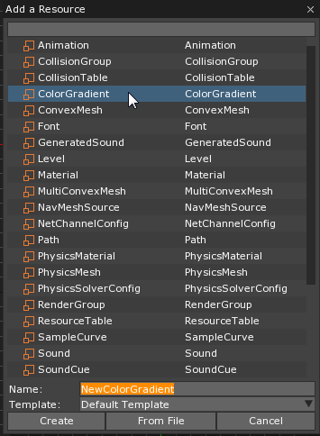
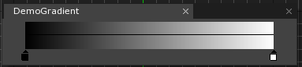
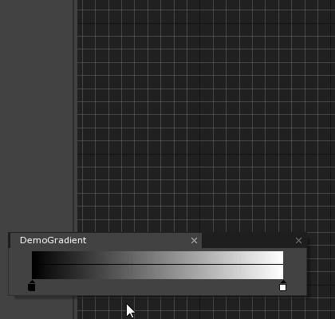

Color Gradient
ColorGradient is a resource that allows the user to make a custom color gradient. The gradient may then be sampled from and applied as a color to any object that has a component with a color property.
Common Uses
Using ColorGradient
Creating a ColorGradient
A new ColorGradient may be created through the Add a Resource window:

Once the new ColorGradient has been named and created, an editor window will pop up:

As can be seen, the editor currently shows a gradient from black to white. The user may add keypoints on the gradient, however, to add in new colors by left-clicking anywhere on the gradient bar. These colors are selected via the common color selection window.

As the common color selection window is used, any value within it may be changed as well, including the alpha value.
Applying the ColorGradient
Sampling from ColorGradient is done through a ColorGradient variable within ZilchScript. The value passed into Sample() must be between 0 and 1:
class GradDemo : ZilchComponent
{
// ColorGradient to use
[Property]
var ColorGrad : ColorGradient = null;
function Initialize(init : CogInitializer)
{
// Set color to the value sampled halfway through the gradient
this.Owner.Sprite.VertexColor = this.ColorGrad.Sample(0.5)
}
}
Attaching this code as a component onto a basic sprite (and selecting the ColorGradient made above for the ColorGrad property), the sprite will appear like so when running the game:
One can also use code to interpolate through the ColorGraident, changing the color of the sprite over time.
class GradDemo : ZilchComponent
{
// ColorGradient to use
[Property]
var ColorGrad : ColorGradient = null;
// Value to pass into ColorGradient's Sample() function
var Value : Real = 0.0;
function Initialize(init : CogInitializer)
{
// Set color to color found at start of the gradient
this.Owner.Sprite.VertexColor = this.ColorGrad.Sample(this.Value);
// Call function to interpolate this.Value from 0 - 1
this.InterpolateValue();
Zero.Connect(this.Space, Events.LogicUpdate, this.OnLogicUpdate);
}
function OnLogicUpdate(event : UpdateEvent)
{
// Update Sprite's VertexColor property with current sample from ColorGrad
this.Owner.Sprite.VertexColor = this.ColorGrad.Sample(this.Value);
}
function InterpolateValue()
{
// Action to interpolate this.Value from 0 - 1 over three seconds
Action.Property(this.Owner.Actions, @this.Value, 1.0, 3.0, Ease.Linear);
}
}
The above code-block accomplishes the following things:
- Initially, it sets the color of the Sprite to the value sampled at 0 on the ColorGradient.
- It then calls a function–
InterpolateValue()–that uses an Action to interpolate theRealvariableValuefrom 0 - 1 over the course of three seconds. - Finally, the
VertexColorproperty on the Sprite component is updated every frame by the value sampled fromColorGradusingValue
In the following demonstration, another, smaller Sprite has been added behind the first Sprite to show how the change in Alpha value affects the appearance of the Sprite: